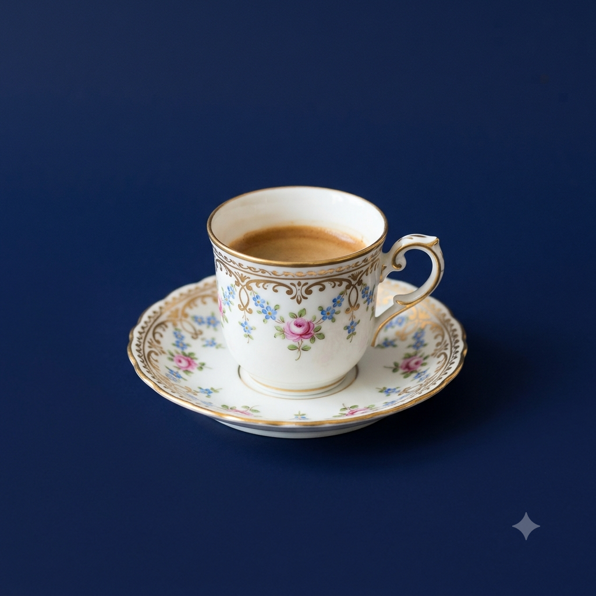

Vou compartilhar curiosidades históricas e da cultura pop, acompanhado de uma xícara de café.

Por Ester C. Machado
Vou comentar um pouco sobre tudo, fatos históricos, curiosidades do rock e para acompanhar uma dose de café